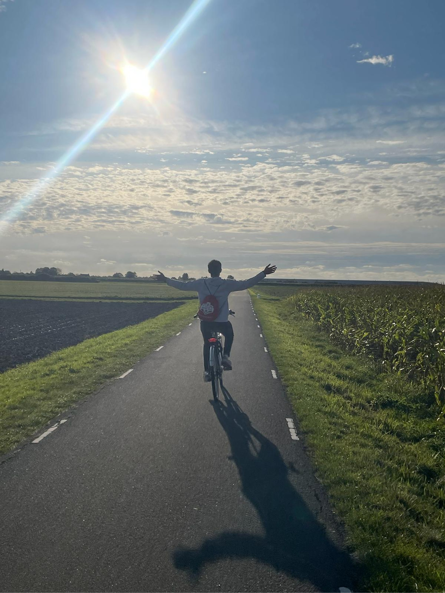
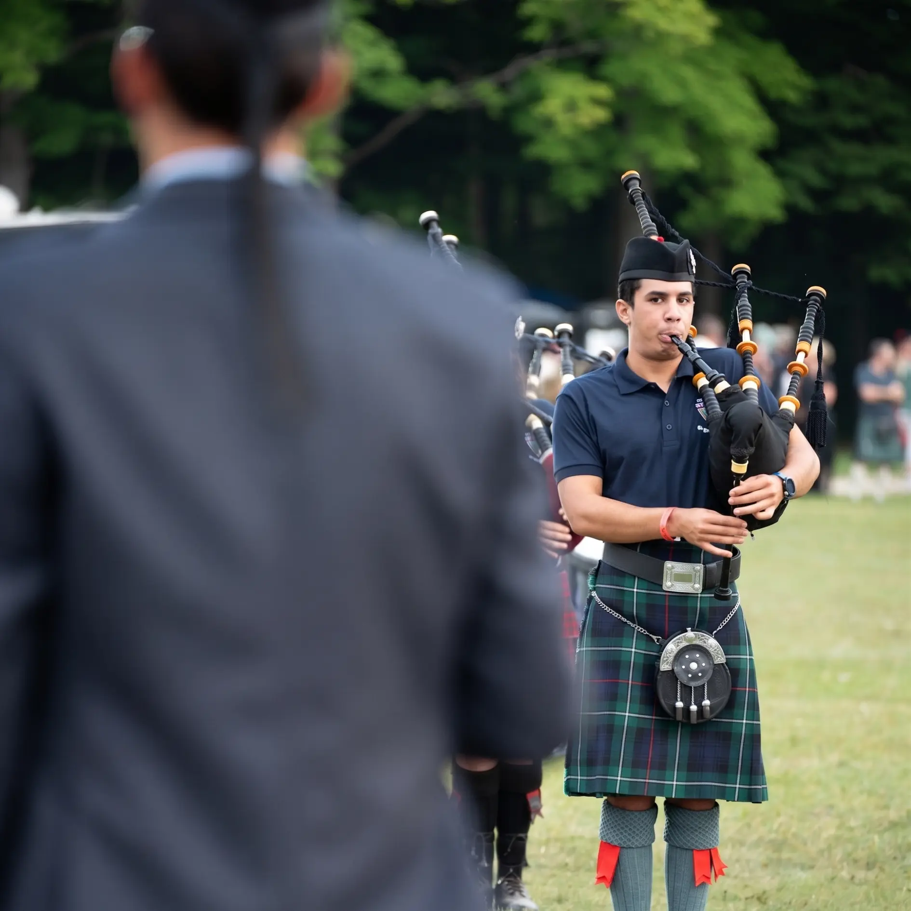
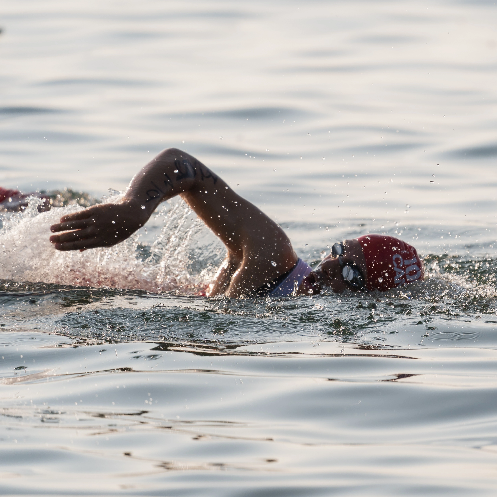
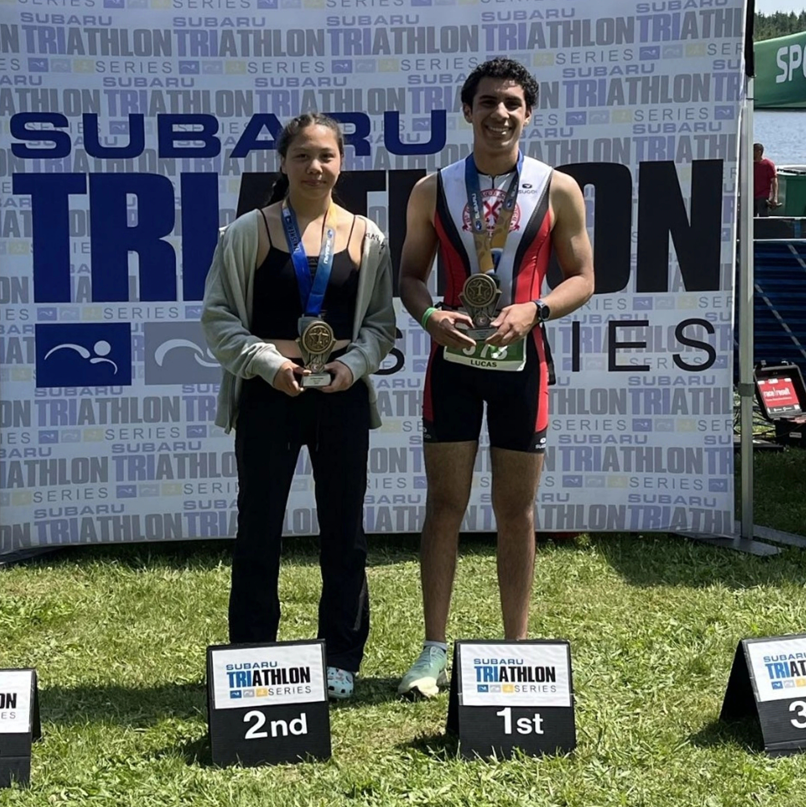
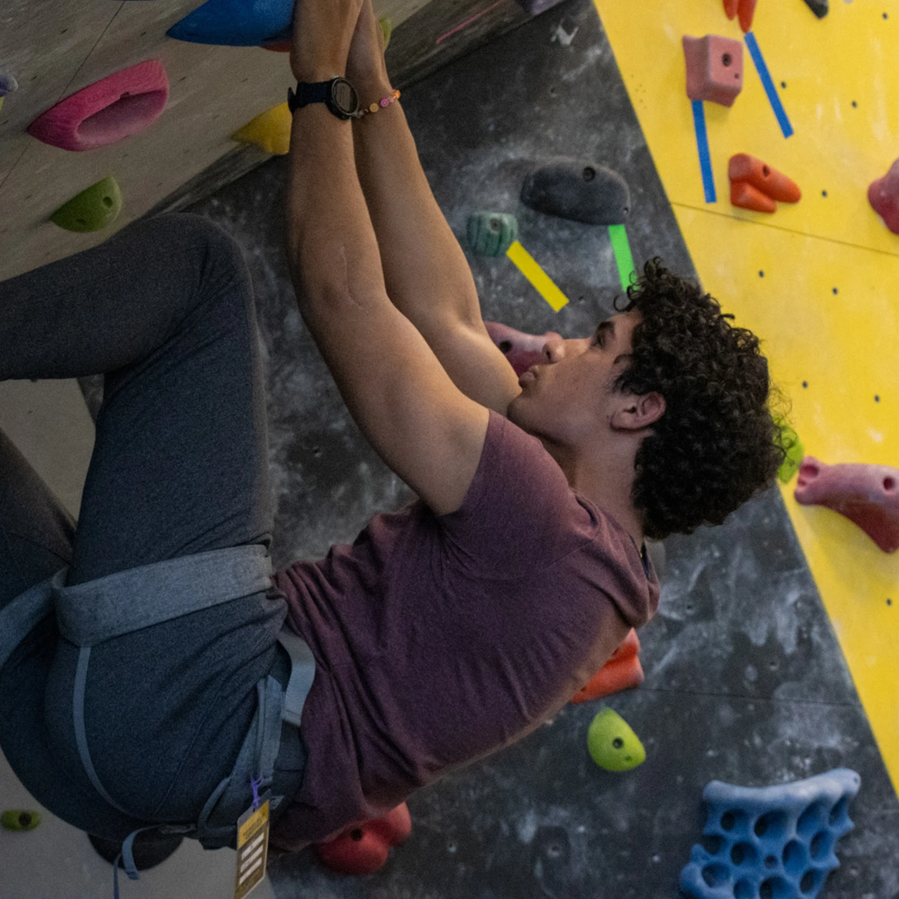
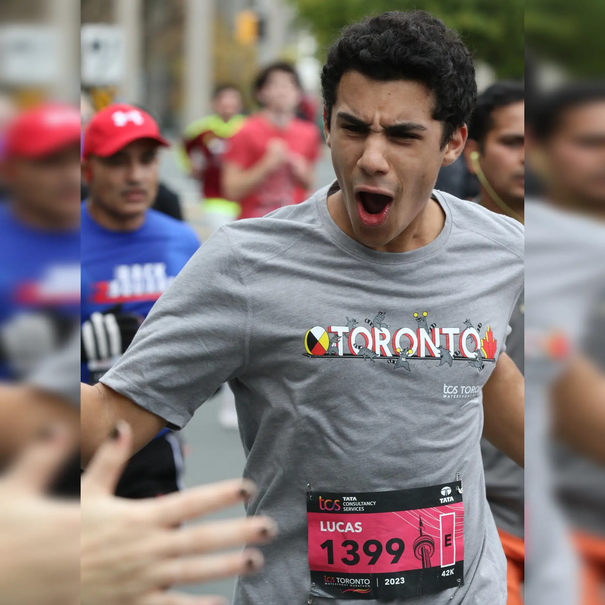

I'm Lucas,
a
- biomedical engineer
- trombonist
- bagpiper
- triathlete
- runner
- chess player
- dog owner
- dog-allergy sufferer
- biomedical engineer
- trombonist
- bagpiper
- triathlete
- runner
- chess player
- dog owner
- dog-allergy sufferer
A well-rounded
individual.
I strive to learn and grow through
a diverse set of jobs, hobbies,
projects, and more.





Lucas is a remarkably innovative researcher. His strong sense of commitment and adaptability has led to finding solutions to challenging research projects. In addition to his warm and engaging character, Lucas has been a fantastic teammate to work with.
Kevin Morimoto
PhD Candidate @ UC Davis Department of Plant Biology and Genome Center
Lucas has demonstrated a very proactive approach to his work in both what has been assigned and also actively seeking additional projects/scopes to be involved with, this has included areas outside of his background schooling where he has adapted well. An excellent Coop placement for Lucas, where his character and work ethic have been evident from the start.
Phillip Byrne, P. Eng.
Plant Engineer @ IKO Madoc
Lucas was able to adjust to a new environment quickly and showed initiative while progressing with his machine learning pipeline. He assessed the challenges involved in his work and demonstrated the ability to solve them efficiently, through both teamwork and independent work. He took advantage of the resources around him to ask questions, helping him learn and further develop his work. His communicative and inquisitive nature helps him easily integrate into any existing teams or workflows. Well done Lucas!
Dr. Stefan Sanow, PhD
Researcher @ The Brady Lab, UC Davis
Lucas consistently exemplifies unwavering commitment to his training regimen, epitomizing a relentless pursuit of improvement. This is even more impressive given his young age. His recent marathon result of 3:50 stands as a testament to his dedication. With such a strong foundation, it's evident that Lucas is poised for continuous growth, ensuring that his journey toward excellence is far from reaching its zenith.
Domenic Oppedisano
CRO @ Ciot, Marathon and IM70.3 Finisher
Lucas is not only one of the most reliable students I’ve ever worked with, he is also exceptionally diligent. As his teacher, he is the kind of young person that is always years ahead of his peers and any environment, classroom or otherwise, is better for having him in it.
Taylor Johnston
Teacher @ St. Andrew's College
His aptitude for understanding and adapting to existing systems was truly commendable. Lucas didn't just implement the assigned tasks; he took the initiative to understand the broader context of the project, ensuring his contributions were well-integrated and optimized. This proactive approach was instrumental in the successful demonstration of the Order Tracking Project at the end of his internship.
Hossein Molavi
Firmware Engineering Co-op @ Wrmth
I had Lucas work for me during the summer. He was a friendly & kind team member. He was approachable and personable with the many children and families he met while portraying a variety of heroic characters.
Sandra Craig
Owner @ Fairytale Parties
Lucas is one of the most reliable team members I've ever had a pleasure to work with while managing the Kitchener Waterloo Youth Orchestra. Lucas is always on the top of assignments, very enthusiastic, communicative and caring for other teammates, ready to step up whenever needed. As an orchestra musician Lucas is consistently prepared to execute his parts with excellence, demonstrating his musicality, high work ethics and commitment. Thank you, Lucas!
Barbara Kaplanek
Kitchener-Waterloo Youth Orchestra Manager
Lucas is awesome to work with, he is a wonderful asset to our team. Additionally, he has extensive knowledge of Game of Thrones. Unlike Littlefinger, he has a bright future!
Mingyu Li
Mechanical Engineer @ OES
Lucas heeft me positief verrast met de hoeveelheid Nederlands die hij in vijf maanden heeft weten op te pakken. Hij is in staat om een gesprek te voeren op beginnersniveau. Ik heb niet eerder een ander zo snel Nederlands zien oppakken. Dit laat zien dat Lucas doorzettings- en inzettingsvermogen heeft.
Guido Vink
Student @ TU Delft
Lucas’ enthusiasm and professionalism were a tremendous asset to our ensemble.
Dr. Kevin Watson, PhD
Associate Professor of Music Education @ Western & Director of the Western Jazz Ensemble
Lucas is more than a friend; hes a father figure. After heroically saving me from a rural Chinese orphanage he raised me while working a part time at NASA and studying advanced electrical engineering at Cambridge. Hes made me the doctor-president I am today and I wholeheartedly endorse him for any position.
Paul Zhao
Lucas' friend, Microsoft investor (owns 1.2e-7% of company)
Specialization in Politics, Philosophy and Economics + History Major @ Western